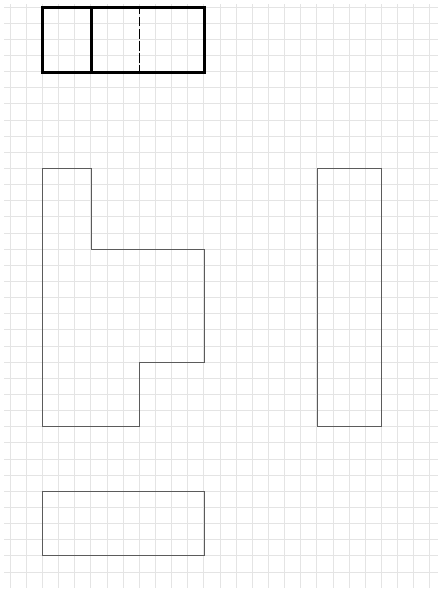
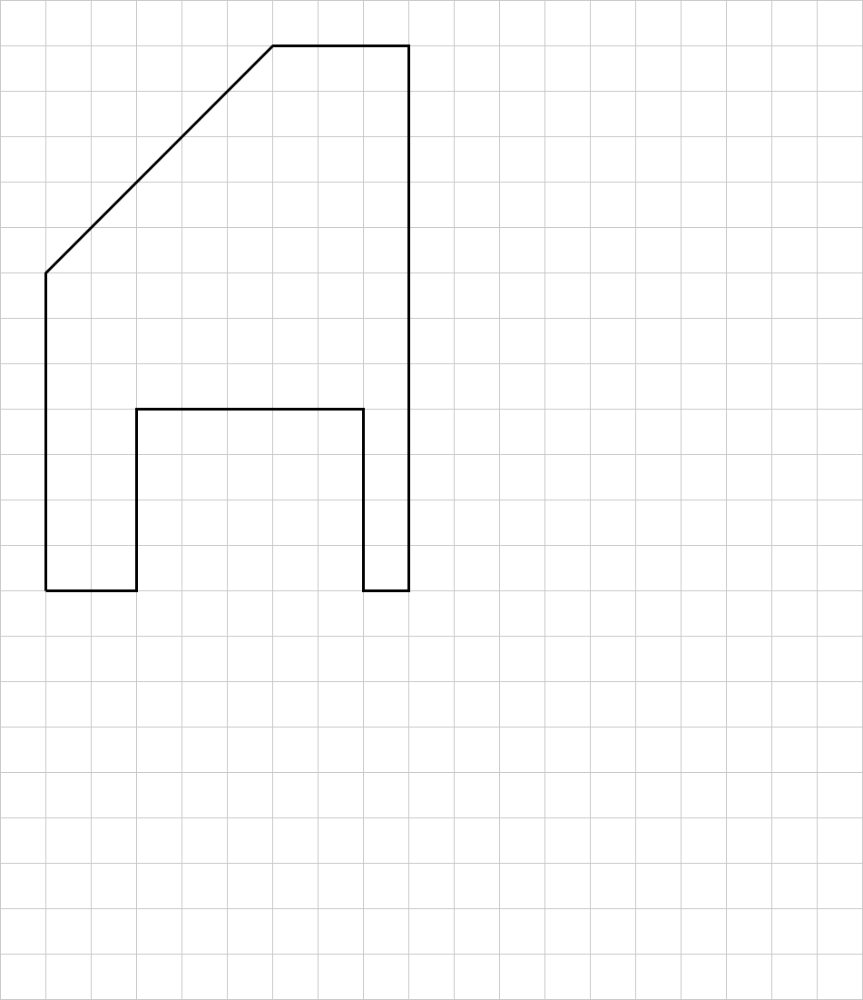

1 Normalprojektion
Öffnet YouTube. Braucht Internet.
Zum Zeichnen und Rechnen am Papier. Braucht Internet.
Zweck: Die Normalprojektion zeigt einen Körper vollständig in Ansichten.
Eine Ansicht ist das Bild, das du von einer Seite siehst.
Die drei Ansichten
- Vorderansicht: von vorne gesehen
- Seitenansicht: von links gesehen. Sie steht rechts neben der Vorderansicht.
- Draufsicht: von oben gesehen
Linienarten
Eine Kante ist eine Linie am Körper, wo zwei Flächen zusammenstoßen. Unsichtbar ist sie, wenn sie hinten liegt und du sie nicht sehen kannst.
| Durchgezogene Linien z. B. Außenlinien | |
| Gestrichelte Linien z. B. unsichtbare Kanten | |
| Strichpunktierte Linien z. B. Symmetrielinien |
Symmetrielinie = Mittellinie. Links und rechts davon ist alles gleich.
Linienstärke
| Breite Linien z. B. Außenlinien | |
| Schmale Linien unsichtbare Kanten, Symmetrielinien |
Beispiel

Zeichenaufgabe 1
✎ Am Papier
Du brauchst: kariertes Papier, weichen Bleistift, Lineal.
Du brauchst: weichen Bleistift, Lineal.
Im Bild unten siehst du einen Körper in 4 Ansichten. Die dicke Figur ganz oben ist die Ansicht von unten. Sie ist schon fertig. Du arbeitest an den 3 dünnen Figuren.
Zeichne direkt in das Bild.
Zuerst: Zeichne die 3 dünnen Figuren auf dein kariertes Papier ab. Zähl die Kästchen: 1 Kästchen im Bild = 1 Kästchen auf deinem Papier. Gleiche Lage wie im Bild.
Beispiel: Die Vorderansicht ist 10 Kästchen breit und 16 Kästchen hoch.
1. Schreib zu jeder dünnen Figur den Namen: Vorderansicht, Seitenansicht, Draufsicht. (Schau beim Beispiel nach.)
2. Zieh die Außenlinien mit dem weichen Bleistift dick nach.
3. Es fehlen unsichtbare Kanten. Zeichne sie in die Seitenansicht und in die Draufsicht ein: gestrichelt und dünn.

Zeichenaufgabe 2
✎ Am Papier
Wieder ein Körper in Ansichten (Bild unten). Die Seitenansicht ist nur angefangen (nur ein Strich).
Zeichne direkt in das Bild.
Zuerst: Zeichne die Figuren auf dein kariertes Papier ab. Ungefähr gleich groß, gleiche Lage wie im Bild.
1. Zeichne die Seitenansicht fertig.
2. Schreib zu jeder Figur den Namen: Vorderansicht, Seitenansicht, Draufsicht.
3. Zieh die Außenlinien mit dem weichen Bleistift dick nach.
4. Zeichne die unsichtbaren Kanten in die Seitenansicht und in die Draufsicht ein: gestrichelt und dünn.

Zeichenaufgabe 3
✎ Am Papier
Du brauchst: kariertes Papier, Bleistift, Lineal.
Du brauchst: Bleistift, Lineal.
Im Bild unten ist nur die Vorderansicht gezeichnet. Du zeichnest die Seitenansicht und die Draufsicht dazu.
Maße: Breite 8 Kästchen · Höhe 12 Kästchen · Tiefe 6 Kästchen
Zeichne direkt in das Raster.
Zuerst: Zeichne die Vorderansicht auf dein kariertes Papier ab. Zähl die Kästchen.
1. Seitenansicht: 3 Kästchen rechts daneben. Rechteck 6 breit, 12 hoch (gleich hoch wie die Vorderansicht).
2. Draufsicht: 3 Kästchen darunter. Rechteck 8 breit, 6 hoch (gleich breit wie die Vorderansicht).
3. Die Abschrägung siehst du auch von der Seite und von oben. Zeichne in beide Rechtecke eine Linie. (Lineal an die Ecke legen: waagrecht hinüber, senkrecht hinunter.)
4. Den Ausschnitt unten siehst du von der Seite und von oben nicht. Zeichne ihn gestrichelt und dünn ein.
5. Schreib dazu: Vorderansicht, Seitenansicht, Draufsicht.
